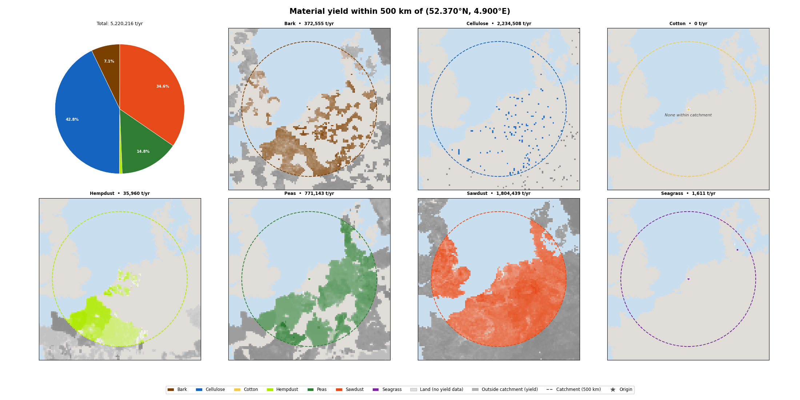

The method
Measuring environmental impact with life cycle assessment
What is counted
Life cycle assessment (LCA) adds up the environmental impacts of everything needed to make a product, from the ground up. Here we count the impacts of making 1 kg of 3D-printed biopolymer:
- Growing or extracting the materials. Crops need land and fertiliser. Wood and paper residues carry a share of the impact of the industry they came from. Seagrass has to be harvested.
- Transport. Trucks carry the materials from the catchment area to the factory. The further away they are, the higher the impact.
- Making the biopolymer. Mixing the ingredients, 3D printing, drying and baking. This is the same everywhere in the game.
This kind of study is called cradle-to-gate: it follows the material from its origin to the factory gate. It stops there. It does not include how a finished product is used, repaired, or disposed of.
Three impact categories
LCA can measure many types of environmental impact. The European method we use, the Environmental Footprint (EF 3.1) (European Commission, 2021; Andreasi Bassi et al., 2023), defines 16 of them, including acidification, ozone depletion and water use. To keep the game clear, we picked three:
- Climate change: greenhouse gases, measured in kg CO₂-equivalent.
- Marine eutrophication: nutrients such as nitrogen washing into the sea, where they cause algal blooms and oxygen-poor water. Measured in kg nitrogen-equivalent.
- Land use: how much farming and forestry reduce the quality of the soil, measured with a soil quality index.
Turning three numbers into one score
The three categories use different units, so they can't be added directly. We use the EF 3.1 normalisation factors to make them comparable (Andreasi Bassi et al., 2023).
A normalisation factor is the total yearly impact of an average European in that category. Dividing your impact by it tells you how large your impact is compared with one person's yearly footprint:
| Category | Average European, per year |
|---|---|
| Climate change | 7,553 kg CO₂-eq |
| Marine eutrophication | 19.5 kg N-eq |
| Land use | 819,500 soil-quality points |
For example, 1 kg CO₂-eq is 1/7,553 of an average European's yearly climate footprint. After normalising, the three categories are on the same scale. We then add them with equal weight and multiply by 1,000. The unit is impact points: one point is a thousandth of an average European's yearly footprint.
Lower is better. Your percentile shows what share of all possible location and catchment combinations scored worse than yours.
Benefits: stored carbon
Not everything in an LCA is a burden. Plants take CO₂ from the air as they grow. When that carbon ends up in a long-lasting product, it stays out of the atmosphere for as long as the product lasts. This can count as a benefit: a credit that lowers the climate change score.
We use an LCA accounting method that credits the carbon sequestration of bio-based products, developed by Guest et al. (2013). It takes two things into account:
- Rotation period: how long the plant takes to grow back and take the carbon up again. Crops regrow within a year. Forests take decades.
- Storage period: how long the carbon stays locked in the product before it returns to the air. In the game, we assume 25 years.
Fast-growing materials, such as cotton, hemp and peas, earn a credit. So do waste materials such as cellulose and seagrass, because their carbon is released 25 years later than it otherwise would be. Materials from slow-growing forests, such as bark and wood flour, get a small penalty instead: 25 years of storage doesn't make up for the decades the forest needs to grow back.
In the game, these credits and penalties are weighted by how much of each material is in your factory's mix, and they show up as the "Avoided" bar.
Want to know more? See the carbon sequestration accounting explainer.
This is a simplified estimate, not a full LCA.
The data
Where the numbers come from
Impacts: ecoinvent
Most of the impact data comes from ecoinvent, the world's most widely used database of life cycle inventories. It contains thousands of industrial and agricultural processes, each with its inputs, emissions and resource use. We used version 3.12 (ecoinvent, 2025; Wernet et al., 2016).
For each material, we used the closest match:
| Material | Impact data |
|---|---|
| Bark | ecoinvent: bark chips. The milling step that turns chips into flour is not yet included. |
| Wood flour | ecoinvent: sawdust from wood processing |
| Cellulose | ecoinvent: cellulose fibre |
| Hemp dust | ecoinvent: hemp carding waste, a by-product of hemp fibre processing |
| Cotton | ecoinvent: seed-cotton (raw, unprocessed cotton) |
| Pea protein | Our own inventory, based on a RAW project workshop, using ecoinvent for background processes |
| Seagrass | A life cycle assessment by a RAW project partner |
Learn more: ecoinvent.org
The impacts are calculated with the EF 3.1 method. More about it: Environmental Footprint (European Commission)
Material availability: our own maps
Ecoinvent tells us how much each material costs the environment. It doesn't tell us where the material is available. There was no ready-made map of that, so we built one.
For each of the seven materials we estimated how many tonnes are produced each year in each 10 × 10 km square of Europe. Each kind of material needed its own approach:
- Crops (peas, cotton, hemp dust). National and regional harvest statistics from Eurostat, spread over the places where each crop is grown using the SPAM crop maps (Eurostat, 2025a; IFPRI, 2024). Hemp dust is a by-product of processing hemp fibre: about 5% of the hemp harvest (Zampori et al., 2013).
- Forest residues (bark, wood flour). The amount of residue from sawmills and other wood industries, estimated by the S2BIOM project, spread over Europe's forests using the EFI forest map (S2BIOM, n.d.; European Forest Institute, n.d.). For countries S2BIOM doesn't cover, such as Norway and Switzerland, we used yield estimates from the literature.
- Cellulose. Fibres rejected by paper mills, estimated from paper production statistics and the locations of paper mills (Eurostat, 2025b; Spatial Finance Initiative, 2025).
- Seagrass. Maps of seagrass meadows, combined with measurements of how fast seagrass grows and an estimate of how much of it washes out of the meadows (EMODnet Seabed Habitats, 2025; Strydom et al., 2023; Cebrián & Duarte, 2001).

When you choose a location and a catchment area, the game adds up everything inside the circle and works out the mix of materials your factory could use.
Simplifications
- Materials travel in a straight line to the factory, plus 30% to account for real roads.
- Every factory uses the same equipment and the same process everywhere.
- The factory needs at least 50,000 tonnes of materials per year within its catchment.
References
- Andreasi Bassi, S., Biganzoli, F., Ferrara, N., Amadei, A., Valente, A., Sala, S., & Ardente, F. (2023). Updated characterisation and normalisation factors for the Environmental Footprint 3.1 method (EUR 31414 EN). Publications Office of the European Union. doi:10.2760/798894
- Cebrián, J., & Duarte, C. M. (2001). Detrital stocks and dynamics of the seagrass Posidonia oceanica (L.) Delile in the Spanish Mediterranean. Aquatic Botany, 70(4), 295–309. doi:10.1016/S0304-3770(01)00154-1
- ecoinvent. (2025). ecoinvent database, version 3.12. ecoinvent Association, Zurich. ecoinvent.org
- EMODnet Seabed Habitats. (2025). Seagrass cover in Europe [Dataset]. gis.ices.dk
- European Commission. (2021). Commission Recommendation (EU) 2021/2279 of 15 December 2021 on the use of the Environmental Footprint methods to measure and communicate the life cycle environmental performance of products and organisations. Official Journal of the European Union, L 471, 1–396. eur-lex.europa.eu/eli/reco/2021/2279/oj
- European Forest Institute. (n.d.). Forest map of Europe [Dataset]. efi.int/knowledge/maps/forest
- Eurostat. (2025a). Crop production in EU standard humidity (apro_cpsh1) [Dataset]. ec.europa.eu/eurostat
- Eurostat. (2025b). Paper and paperboard production statistics (for_pp) [Dataset]. ec.europa.eu/eurostat
- Guest, G., Cherubini, F., & Strømman, A. H. (2013). Global warming potential of carbon dioxide emissions from biomass stored in the anthroposphere and used for bioenergy at end of life. Journal of Industrial Ecology, 17(1), 20–30. doi:10.1111/j.1530-9290.2012.00507.x
- International Food Policy Research Institute (IFPRI). (2024). Global spatially-disaggregated crop production statistics data for 2020, version 2.0 (SPAM 2020) [Dataset]. mapspam.info
- S2BIOM. (n.d.). Biomass cost-supply data [Dataset]. s2biom.wenr.wur.nl
- Spatial Finance Initiative. (2025). GeoAsset pulp and paper database [Dataset]. cgfi.ac.uk
- Strydom, S., McCallum, R., Lafratta, A., Webster, C. L., O'Dea, C. M., Said, N. E., … Serrano, O. (2023). Global dataset on seagrass meadow structure, biomass and production. Earth System Science Data, 15(1), 511–519. doi:10.5194/essd-15-511-2023
- Wernet, G., Bauer, C., Steubing, B., Reinhard, J., Moreno-Ruiz, E., & Weidema, B. (2016). The ecoinvent database version 3 (part I): overview and methodology. The International Journal of Life Cycle Assessment, 21(9), 1218–1230. doi:10.1007/s11367-016-1087-8
- Zampori, L., Dotelli, G., & Vernelli, V. (2013). Life cycle assessment of hemp cultivation and use of hemp-based thermal insulator materials in buildings. Environmental Science & Technology, 47(13), 7413–7420. doi:10.1021/es401326a